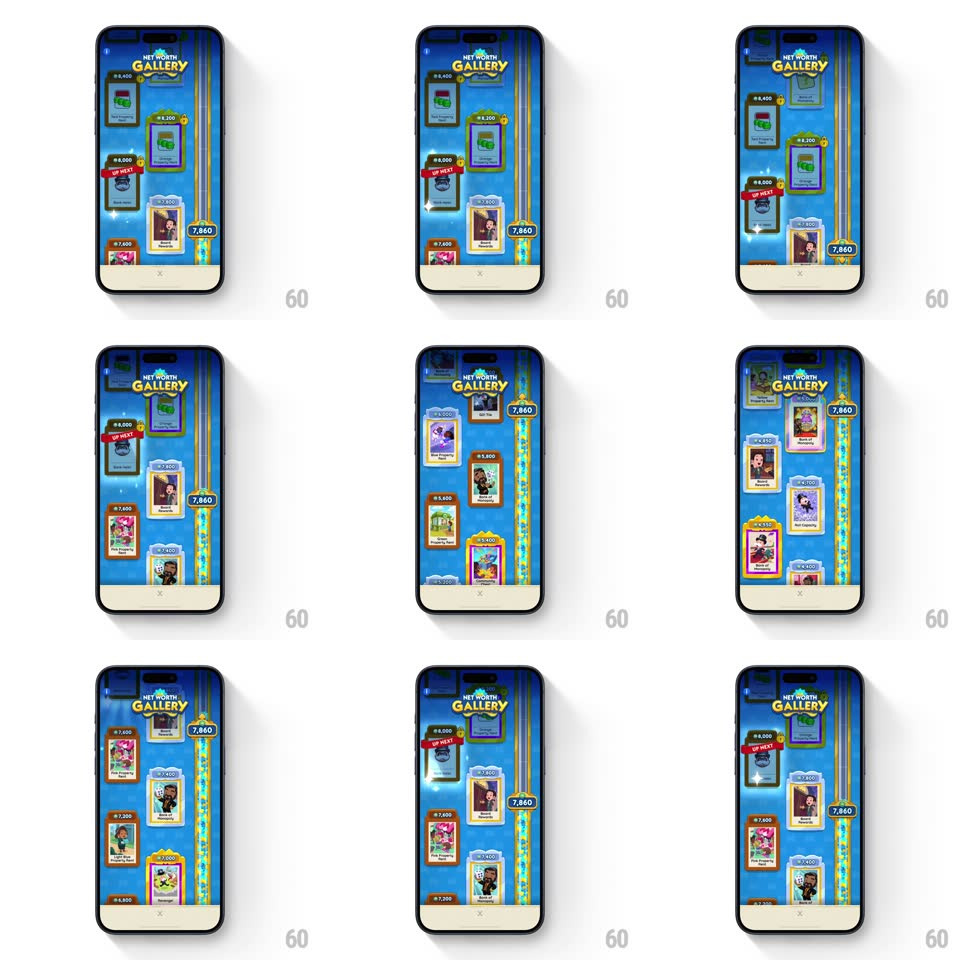

Media
Frame-by-frame

Rebuild this interaction 1:1: Monopoly Go's Net Worth Gallery - a vertically scrolling gallery wall of framed reward cards with a gold progress rail and milestone marker on the right edge, and tapping any frame opens its reward preview card over the dimmed wall.

Rebuild this interaction 1:1: Monopoly Go's Net Worth Gallery - a vertically scrolling gallery wall of framed reward cards with a gold progress rail and milestone marker on the right edge, and tapping any frame opens its reward preview card over the dimmed wall.
## Integration
Integration: stack-agnostic spec - springs given as stiffness/damping, timed motions as duration + curve; map every value to your framework and animation library of choice.
## Scene
A full-screen "NET WORTH GALLERY" view: deep-blue gallery wall with gold curtain swag at top, two staggered columns of framed artwork cards (some gold-framed and owned, some greyed/locked, one with a red "UP NEXT" ribbon), a vertical gold rail on the right carrying the current net-worth badge ("7,860"), and a cream bottom bar with a page dot.
## Motion spec
Pattern: vertical scroll with rail-linked progress + card preview.
- Vertical scroll: the card wall scrolls with 1:1 finger tracking, flick momentum (~2500px/s decay), and rubber-band at the ends (max 60px overscroll, spring return ~300/20).
- The two columns are vertically offset by half a card - the stagger stays fixed while scrolling.
- As the wall scrolls, the gold rail's milestone badge slides to track the visible region's net-worth value, updating its number on milestone crossings.
- Tap a frame: the wall dims (black overlay to 60%, 200ms) and the tapped card's preview pops in (scale 0.85 -> 1, spring ~350/22, 250ms) showing the reward value, name, and "Current Welcome Reward: Bonus Payout" detail with a dice count.
- Dismiss: tap the X or backdrop - the preview scales down (0.95 -> gone, 180ms) and the dim lifts.
## Calibration
- Locked frames stay desaturated grey while scrolling past - ownership reads at a glance.
- The rail badge never lags the scroll - it moves continuously with the content.
## Reduced motion
Scroll without momentum; preview appears without spring.
## Don't miss
- The gold rail is a separate layer from the card columns - it parallaxes slightly against the wall during scroll.
- "UP NEXT" gets a red diagonal ribbon on its frame corner - the one piece of red on the wall.